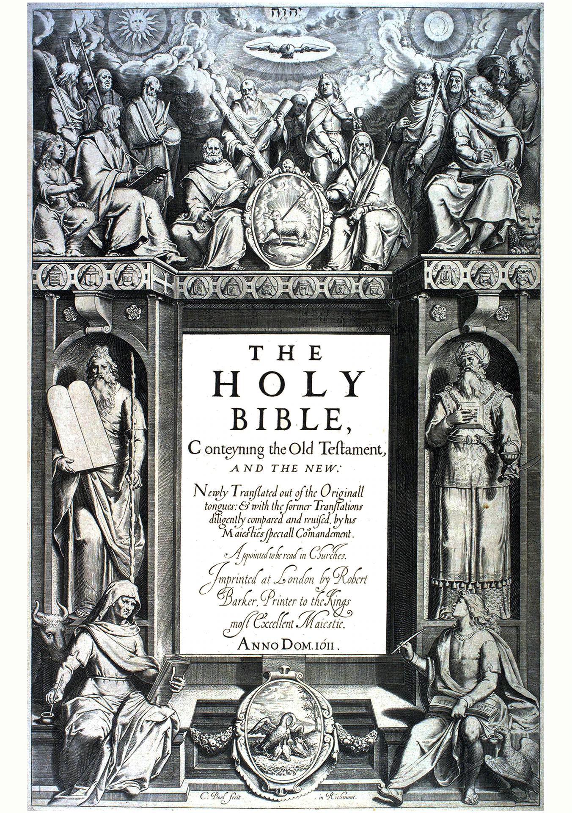

아직 펼치지 않은 카드
아직 펼치지 않은 카드
모두의 말로 찍은 성경 · 6킹 제임스 성경1611년 처음 찍은 킹 제임스 성경은 수집가들 사이에서 ‘그(He) 성경’이라고 불려요. 무엇이 ‘그’가 되었을까요?한 글자 때문에 별명이 붙은 성경이 있대!
1604~1611년웨스트민스터 · 케임브리지 · 옥스퍼드 → 런던 문구상 회관
킹 제임스 성경
1611년 킹 제임스 성경의 첫 장에는 “앞선 번역들과 꼼꼼히 견주어 고쳤다”는 말이 찍혔어요. 여섯 모임이 나눠 옮긴 몫은 1610년 무렵 런던 문구상 회관에 모여, 아홉 달 동안 날마다 다시 다듬어졌어요. 흩어진 여섯 조각을 모아 그 표제지를 다시 맞춰 봐요.
여섯 모둠이 나눠서 옮긴 성경을 한 권으로 모았대. 조각을 모아 볼까?
검수 전 시안이에요(기준서 2판). 표제지의 글은 폴저 도서관 목록의 옮겨 적기를, 번역 규칙은 노턴의 목록을 실은 학술 글을, 문구상 회관의 일은 보이스의 손자 워커의 기록과 영국 인명사전을 따랐어요. 여섯 조각은 여섯 모임을 빗대어 이 안내서가 표제지를 나눈 것이에요. 상상은 ‘눈 감고 상상해 보기’에만 썼어요.
시안 확인용카드 단계 미리 보기
1
표제지의 한 줄
1611년 런던에서 나온 킹 제임스 성경의 표제지예요. 가운데 흰 칸의 글은 이래요. ‘거룩한 성경. 구약과 신약을 담았다. 원어에서 새로 옮기고, 앞선 번역들과 꼼꼼히 견주어 고쳤다. 왕의 특별한 명령으로. 교회에서 읽도록 정함.’
“newly translated out of the originall tongues & with the former translations diligently compared and reuised”
표제지의 글 · 폴저 셰익스피어 도서관 목록의 옮겨 적기
‘앞선 번역들’은 무엇이었을까요? 번역자들이 받은 규칙의 열넷째는, 주교 성경보다 본문에 더 맞을 때 쓸 번역으로 틴데일, 매튜, 커버데일, 휘트처치(그레이트 바이블), 제네바 성경을 들어요.
400년 전 성경의 첫 장이야. 가운데에 “앞선 번역들과 꼼꼼히 견주어 고쳤다”고 쓰여 있대.
물어보기네 귀퉁이에 앉은 사람들 곁에 어떤 동물이 있을까?
2
왕의 명령, 열다섯 규칙
1604년, 잉글랜드 왕이 된 이듬해의 제임스 1세예요. 스코틀랜드 왕이던 그가 잉글랜드 왕위를 이어 런던으로 내려온 뒤의 모습이에요.
번역은 런던 주교 리처드 밴크로프트(Richard Bancroft · 뒤에 캔터베리 대주교)가 맡아 이끌었고, 번역자들에게 규칙을 정해 주었어요. 첫째 규칙은 교회에서 읽던 주교 성경을 따르되, 원문이 허락하는 만큼만 고치라는 것이었어요.
셋째 규칙은 옛 교회 말을 지키라고 했어요. ‘church(교회)’를 ‘congregation(회중)’으로 옮기지 말라는 거예요. 틴데일 신약과 주교 성경은 마태복음 16장 18절에서 ‘congregation’이라고 썼지만, 1611년 판은 ‘Church’라고 옮겼어요. 예수께서 이 반석 위에 교회를 세우겠다고 하신 구절이에요.

규칙은 일하는 차례도 정했어요. 한 모임의 사람마다 같은 장을 옮긴 뒤, 함께 모여 무엇을 남길지 정했어요. 한 권을 마치면 다른 모임에 보내 살피게 했고, 의견이 다르면 마지막에 모임마다의 대표가 모여 풀기로 했어요.
임금님이 새 성경을 만들라고 했대. 지켜야 할 규칙도 정해 줬어.
물어보기임금님 목걸이 끝에 무엇이 매달려 있을까?
3
웨스트민스터의 한 방
1601년부터 1605년까지 웨스트민스터 사원의 수석 사제였던 랜슬럿 앤드루스(Lancelot Andrewes)예요. 그는 창세기부터 열왕기하까지를 맡은 웨스트민스터 첫째 모임을 이끌었어요. 동생 로저 앤드루스는 케임브리지 첫째 모임에 있었어요.
웨스트민스터 사원은 킹 제임스 성경을 옮기던 모임들이 수도원장 집의 ‘예루살렘 방’에서 모였다고 적어요. 14세기에 지은 방이에요.

모임에서 어떻게 일했는지는 남은 기록이 적어요. 뒷날 법학자 존 셀던(John Selden)은 이렇게 전했어요. 한 사람이 새 번역을 소리 내 읽으면, 나머지는 저마다 히브리어·그리스어나 프랑스어·스페인어·이탈리아어 성경을 펴 들고 들었다고요. 틀린 데가 있으면 말하고, 없으면 읽는 사람이 계속 읽었대요. 어느 단계의 일인지는 밝히지 않았어요.
위 판화는 벤첼 홀라르(Wenceslaus Hollar)가 새겼어요. 아래 라틴어 글은 그를 ‘윈체스터 주교’라고 불러요. 앤드루스는 1605년 치체스터 주교가 되었고, 뒤에 일리와 윈체스터의 주교가 되었어요.
이 할아버지가 성경 맨 앞 책들을 옮긴 모임을 이끌었대.
물어보기판화 아래 글자 가운데 이 사람 이름을 찾아볼까?
4
문구상 회관의 아홉 달
여섯 모임이 맡은 몫을 다 옮기자, 케임브리지와 옥스퍼드, 웨스트민스터에서 온 성경 원고 세 벌이 런던에 모였어요. 곳마다 두 사람씩, 모두 여섯 사람이 이것을 함께 살펴 한 권으로 다듬기로 했어요.
그들은 날마다 문구상 회관(스테이셔너스 홀)에 갔어요. 책을 베끼고 팔던 사람들, 뒤에는 인쇄업자들까지 모인 런던 문구상 조합의 회관이에요. 일은 아홉 달 걸렸고, 사람마다 조합에서 한 주에 30실링을 받았어요.
케임브리지에서 온 존 보이스(John Bois)는 그 자리의 이야기를 혼자 적어 두었어요. 아래 표제지를 여섯 조각으로 나눈 것은 여섯 모임을 빗댄 것이에요. 조각의 크기는 맡은 양과 상관없어요.
여섯 조각을 하나씩 눌러 제자리로 모아 보세요. 조각마다 한 모임이 맡은 몫이 적혀 있어요.

여섯 모임을 빗대어 이 안내서가 여섯 조각으로 나눈 표제지(실제로 나뉜 것이 아니에요 · 양옆 여백을 조금 넓혔어요) · 판화: 코르넬리스 보엘(1611) · 퍼블릭 도메인 · 위키미디어 공용
조각을 눌러 보세요. 그 모임이 어디서 무엇을 옮겼는지 알려 줘요.
여섯 조각이 다시 한 장이 되었어요. 처음에 본 그 표제지, 그 한가운데 한 줄이 다시 보여요.
“우리는 한 일을 다시 고치는 것을, 두드려 만든 것을 다시 모루에 올려놓는 것을 마다하지 않았습니다.”
번역자들의 머리말 「번역자들이 읽는 이에게」(1611) · 이 안내서가 옮김
모루는 대장장이가 쇠를 올려놓고 두드리는 쇳덩이예요.
다시 맞춘 표제지 한가운데에, 처음 본 그 한 줄이 있어요. ‘앞선 번역들과 꼼꼼히 견주어 고쳤다.’
세 곳에서 온 원고를 여섯 사람이 아홉 달 동안 날마다 다시 읽었대.
물어보기조각 여섯 개를 다 모으면 무엇이 될까?
눈 감고 상상해 보기
긴 탁자 위에 세 군데에서 온 원고 꾸러미가 놓여 있어요. 한 사람이 새 번역을 소리 내 읽고, 둘레의 사람들은 저마다 다른 성경을 펴 들고 눈으로 따라가요. 누군가 손을 들면 읽기가 멈춰요. 한 낱말을 두고 이야기가 오가는 동안, 보이스의 펜이 사각사각 움직여요.
눈을 감아 봐. 한 사람이 천천히 읽고, 다들 귀 기울여. 누가 손을 들면 멈추고, 펜이 사각사각.
나의 자리
다시 맞춘 표제지의 ‘앞선 번역들과 꼼꼼히 견주어 고쳤다’는 한 줄 안에, 이제 누구누구의 손이 보이나요?
이 표제지 한 장 안에 몇 사람의 손이 들어 있을까?
마음에 닿는 한 줄을 고르거나 직접 써 보세요. 한 줄을 남기면 이 자리의 도장이 찍혀요. 이 기기에만 저장돼요.
더 깊이
궁금한 칸만 펼쳐 읽어도 괜찮아요.
알고 보면
좋은 번역을 더 좋게 머리말은 새 번역을 만들 생각도, 나쁜 번역을 좋게 고칠 생각도 처음부터 없었다고 해요. 좋은 번역을 더 좋게, 여러 좋은 번역에서 흠잡을 데 없는 가장 좋은 하나를 만드는 것이 목표였다고 적었어요. 이 머리말은 마일스 스미스(Miles Smith)가 쓴 것으로 여겨지는데, 보통 판에서는 흔히 빠졌어요.
1,008일 머리말은 이 일이 72일 만에 서둘러 끝난 것이 아니라, “72일의 일곱 곱의 두 곱이 넘는” 수고가 들었다고 해요. 셈하면 1,008일이 넘어요.
잊혔다 돌아온 메모 보이스의 메모는 300년 넘게 잊혔다가, 옥스퍼드 코퍼스 크리스티 칼리지 도서관에 남은 윌리엄 풀먼(William Fulman)의 베낀 글로 다시 알려졌어요. 1969년 워드 앨런(Ward Allen)이 펴냈어요. 로마서부터 요한계시록까지를 다듬던 자리의 메모로, 서신서에서만 453곳을 두고 나눈 이야기가 적혀 있어요.
‘교회에서 읽도록 정함’ 표제지에는 이렇게 찍혀 있지만, 케니언은 이 성경을 나라나 교회가 공식으로 승인했다는 기록은 없다고 했어요. 카를턴도 이를 뒷받침할 왕의 포고나 의회 법을 찾을 수 없다고 적었어요.
판화를 새긴 사람 표제지 판화의 맨 아래에는 ‘C. Boel fecit in Richmont’, 곧 코르넬리스 보엘(Cornelis Boel)이 리치먼드에서 새겼다는 서명이 있어요.
기록마다 다른 점
문구상 회관에 모인 사람 보이스의 손자 앤서니 워커(Anthony Walker)는 곳마다 두 사람씩 여섯 사람이라고 적었어요. 도르트 회의의 보고는 열두 사람이라고 했어요(워드 앨런, 1966). 케니언은 모임마다 두 사람씩이라고 적었어요.
케임브리지 첫째 모임은 어디까지 케니언과 케임브리지 대학 도서관은 역대상부터 전도서까지라고 적었어요. 영국 인명사전의 보이스 항목은 역대기부터 아가까지라고 적었어요.
1611년의 값 앞면 카드는 제본하지 않은 것 10실링, 제본한 것 12실링이라고 해요. 케임브리지 대학 도서관은 나온 날짜와 값, 찍은 부수를 모른다고 적어요.
더 찾아보기
번역자들의 머리말과 1611년 판을 직접 보고 싶다면 이런 곳이 있어요.
여섯 조각 모으기 금박
흩어진 여섯 조각을 모두 모아 표제지를 다시 맞추면 카드에 금박이 입혀져요.
여섯 모임의 조각을 모아 표제지 다시 맞추기
아이와 함께 채색
아이와 함께 ‘영화처럼 보기’를 끝까지 보면 카드가 채색돼요.
아이와 함께 ‘영화처럼 보기’를 끝까지 보기
근거 보기 (23)
- 폴저 셰익스피어 도서관 STC 2216(‘He bible’) — 표제지 옮겨 적기(The Holy Bible : conteyning the Old Testament, and the New : newly translated out of the originall tongues & with the former translations diligently compared and reuised, by His Maiesties speciall co[m]mandement : appointed to be read in churches), 로버트 바커 1611, 판화 서명 “C. Boel fecit in Richmont”, 룻기 3장 15절 he went
- 린컨 블루멜·잰 마틴 「The King James Translation of the New Testament」(BYU 종교 연구 센터) — 노턴의 규칙 목록(1 주교 성경 · 3 church/congregation · 6 난외주 · 8·9·10 일하는 차례와 총회 · 13 · 14 틴데일·매튜·커버데일·휘트처치·제네바 · 15는 뒤에 더함), 1602년 주교 성경 40권, 1610년 문구상 회관 아홉 달, 보이스 메모 서신서 453곳
- BYU 도서관 전시 「Translating the King James Bible」 — 런던 주교 리처드 밴크로프트가 이끌고 규칙을 정함, 셀던 「Table-Talk」(1696) · 비서 리처드 밀워드가 모음, 법학자·역사가
- 스크리브너, 케임브리지 문단 성경(1873) 머리말 xiv쪽 — 워커가 쓴 보이스의 삶: 세 벌이 케임브리지·옥스퍼드·웨스트민스터에서 런던으로, 곳마다 두 사람씩 여섯, 다운스와 보이스가 불려 감, 날마다 문구상 회관, 아홉 달(three quarters of a year), 보이스 혼자 메모
- 스크리브너 같은 책 lxiii쪽 — 웨스트민스터 첫째 모임은 창세기~열왕기하, 앤드루스(그때 웨스트민스터 수석 사제), 옥스퍼드 모임은 예언서, 문구상 회관의 아홉 달
- 스크리브너 같은 책 lxiv쪽 — 셀던 「Table Talk」의 번역 방법(한 사람이 읽고 나머지는 다른 성경을 들고 들음), 어느 단계인지는 밝히지 않음
- 영국 인명사전(1885~1900) 「Bois, John」(위키문헌 보관본) — 1604년 케임브리지 번역자, 외경과 역대기~아가, 여섯 사람 가운데 하나, 아홉 달, 문구상 조합에서 한 주 30실링
- 이스트캐롤라이나 대학 도서관: 워드 앨런 「Translating for King James」(밴더빌트 대학 출판부, 1969) — 유일하게 남은 번역자의 메모, 1610~1611년 문구상 회관에서 로마서~요한계시록을 다듬은 최종 검토, 300년 동안 잊힘, 윌리엄 풀먼의 베낀 글, 옥스퍼드 코퍼스 크리스티 칼리지 MS 312
- 워드 앨런 「John Bois’s Notes」(르네상스 뉴스, 1966 · 케임브리지 대학 출판부) — 문구상 회관에 워커는 여섯 사람, 도르트 회의 보고는 열두 사람 · 머리말의 모루 구절
- 디지털 아크(서스캐처원 대학) 「Anthony Walker (1622–1692)」 — 할아버지 존 보이스의 삶을 쓴 원고(영국 도서관 Harley MS 7053)
- CCEL 「The Translators to the Reader」(1611) 10부 — 좋은 번역을 더 좋게 · 여러 좋은 번역에서 가장 좋은 하나, 다시 모루에, 72일이 아니라 72일의 일곱 곱의 두 곱이 넘는 수고
- 프레더릭 케니언 「English Versions」(헤이스팅스 성경 사전, 1909 · Bible Research 보관) — 여섯 모임과 맡은 책(웨스트민스터 창세기~열왕기하·서신서, 옥스퍼드 예언서·복음서·사도행전·요한계시록, 케임브리지 역대상~전도서·외경), 모임마다 7~10명 모두 47명, 모임마다 두 대표의 아홉 달 최종 검토, 공식 승인 기록 없음, 머리말은 마일스 스미스로 여겨지며 흔히 빠짐
- 제임스 카를턴(1902 · 인터넷 아카이브) — ‘교회에서 읽도록 정함’을 뒷받침할 교회·나라의 결정, 왕의 포고, 의회 법이 없음
- 케임브리지 대학 도서관 ‘생각의 줄기(Lines of Thought)’ 전시 — 밴크로프트, 랜슬럿 앤드루스가 웨스트민스터 첫째 모임을 맡음, 동생 로저와 이매뉴얼 학장 채더턴은 케임브리지 첫째 모임(역대상~전도서), 둘째 모임은 앤드루 다운스가 이끌고 보이스와 워드(외경), 과정의 기록은 적음, 1611년 언젠가 · 날짜·값·부수 모름
- 웨스트민스터 사원: 랜슬럿 앤드루스 — 1601~1605년 수석 사제, 킹 제임스 성경 번역에서 중요한 몫, 1605년 치체스터 주교, 일리와 윈체스터 주교, 1626년 9월 25일 세상을 떠남, 서더크 대성당에 묻힘
- 웨스트민스터 사원: 예루살렘 방 — 수도원장 니컬러스 리틀링턴(1362~1386) 때 더한 방, 1611년 킹 제임스 성경을 쓰던 모임들이 모인 곳
- 문구상 조합(Stationers’ Company) 누리집: 역사 — 1403년 책을 베끼고 팔던 사람들과 채색하던 사람들의 조합, 16세기 초 인쇄업자들이 들어옴, 1557년 왕의 인가
- 아트 UK: 「James VI and I」(1604 · 스코틀랜드 국립 초상화 미술관 PG 561) — 잉글랜드 왕위를 이어 런던으로 내려온 뒤의 모습
- Faith of God 「The New Testament compared: Matthew」 — 마태복음 16장 18절: 위클리프 chirche, 틴데일 1526 congregation, 1534·커버데일 congregacion, 제네바 Church, 주교 성경 congregation, 킹 제임스 Church
- 위키미디어 공용: 1611년 표제지(판화 코르넬리스 보엘 · 열두 사도, 모세와 아론, 네 복음서 기자와 상징 짐승, 비둘기와 히브리 글자) 정보
- 위키미디어 공용: 존 더 크리츠의 제임스 1세 초상(1604) 정보
- 위키미디어 공용: 벤첼 홀라르의 랜슬럿 앤드루스 판화 정보(토론토 대학 홀라르 디지털 컬렉션)
- 위키백과 「King James Version」(길잡이로만)
그림·사진·소리 출처
‘처음 만나는 기독교 문화’의 깊은 카드예요. 카드 단계와 남긴 글은 이 기기에만 저장돼요.